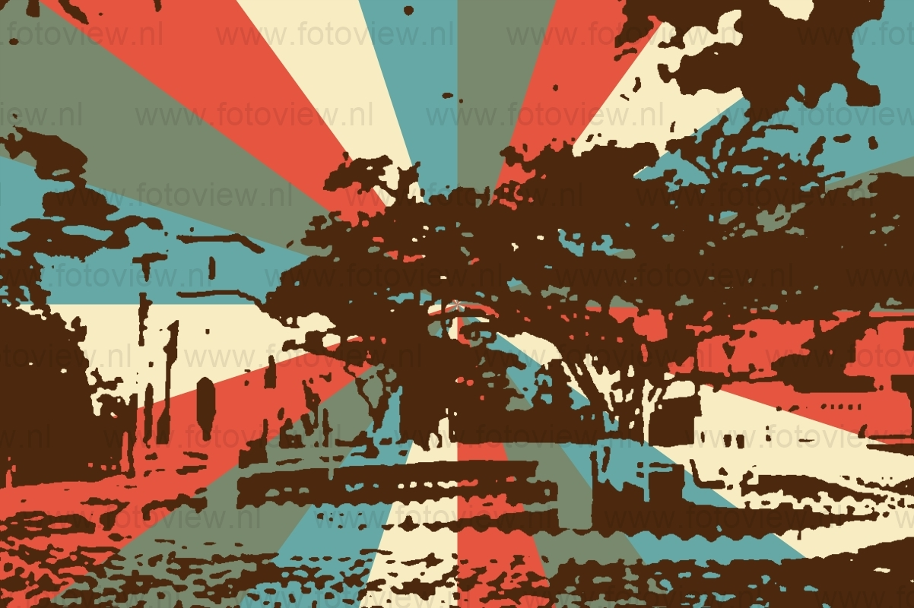
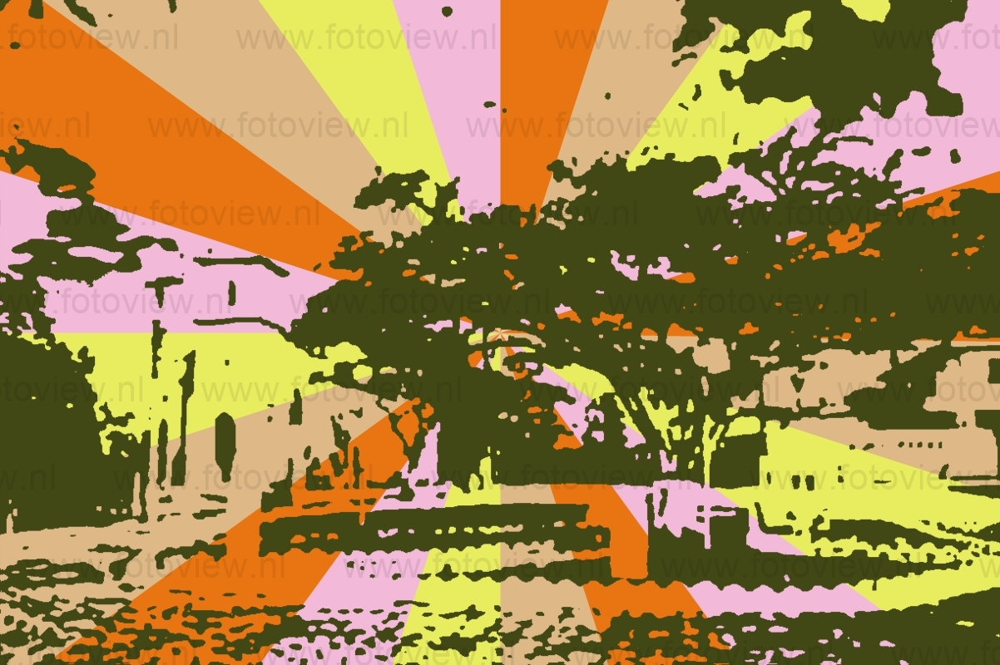
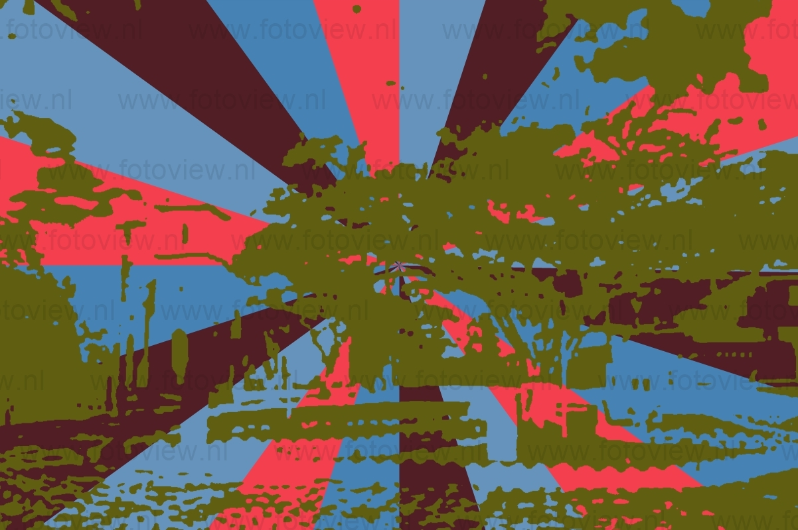

Quanto à origem do nome Sete Barras, existem duas correntes de opinião: uma atribui o nome ao fato da pequena Vila, que deu origem à Cidade, estar situada nas proximidades da orla do sétimo afluente do Ribeira, a contar de sua foz, e a outra, às lendas ligadas à exploração de ouro na região, no início da colonização, entre elas a das Sete Barras de ouro perdidas. No século XIX, José Carlos Toledo doou publicamente ao divino Espírito Santo uma área de dois alqueires de terra, à margem esquerda do rio Ribeira do Iguape, para que ali fosse construída uma capela em seu louvor. Não se passaram muitos anos entre a implantação da capela e a elevação da aldeia ali existente à Distrito de Paz, do Município de Xiririca (hoje Eldorado), através da Lei Provincial n.º 58, de 21 de março de 1885. Em 1944, quando da criação do Município de Registro (desmembrado de Iguape), o Distrito de Sete Barras passou a integrar a nova cidade, à qual estava ligada por estrada e por curso d?água. Pouco mais de treze anos depois, começou o movimento pela autonomia do Distrito, culminando com a emancipação político-administrativa em 18 de fevereiro de 1959, através da Lei nº 5285, tendo como primeiro Prefeito Sebastião Madaleno de Moraes.
  